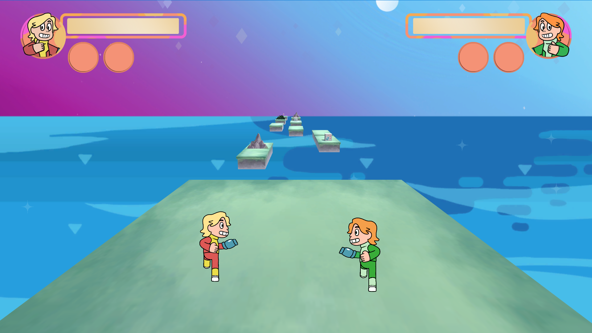
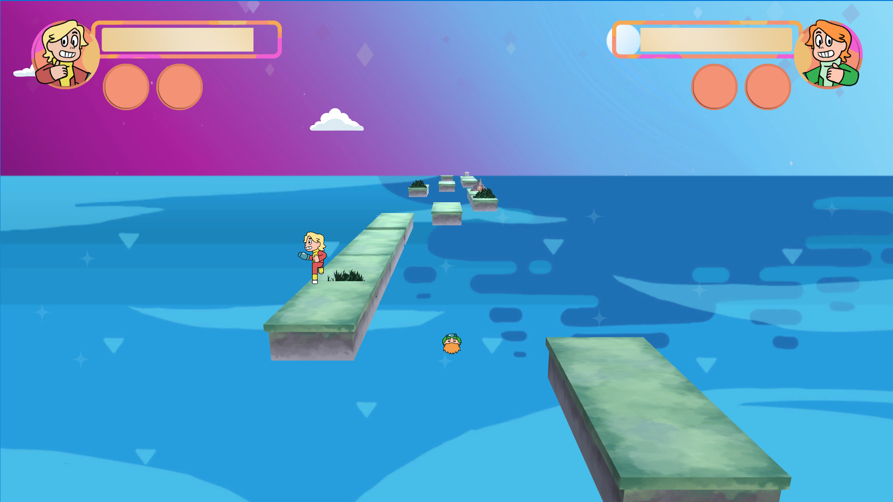
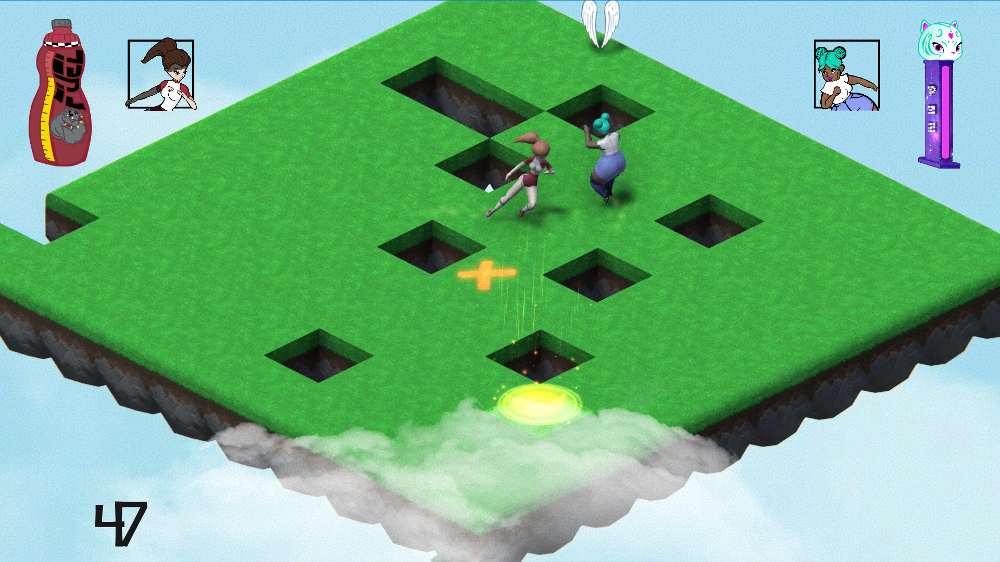
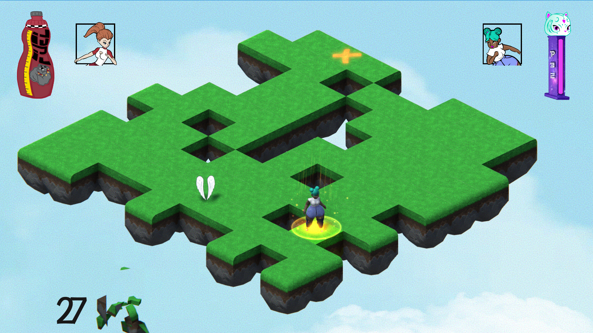
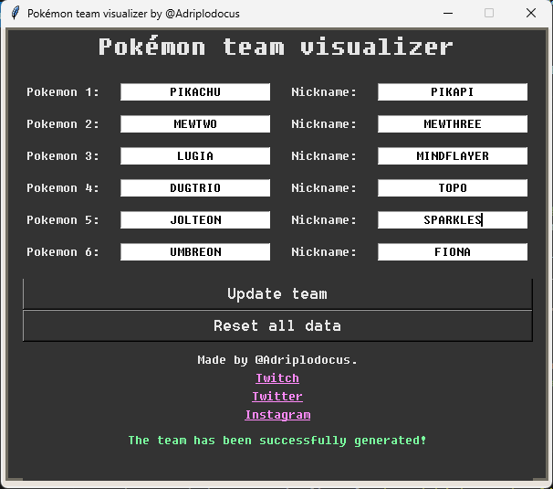

This personal project is an ongoing attempt to tackle the challenge of building a highly ambitious game from the ground up.
We’re using Zenject as our dependency injection framework, which has made scaling the codebase and managing services simple and efficient. Unity Analytics has also been integrated in preparation for evaluating player behavior, helping guide future development decisions based on real gameplay data.
The game features multiple control possibilities at the level design, offering a dynamic, fast-paced, and engaging experience. The damage system was carefully designed to allow detailed control over each attack’s properties—such as damage value, whether it can be countered, and more—making combat feel both flexible and deeply customizable.
For persistence, we’ve implemented a centralized save system based on encrypted JSON files, making it easy for developers to add and manage saved data securely and consistently.
Bread of the Wild
In Bread of the Wild, you help Bro advance in his ninja training by delivering loaves of bread to a mysterious recipient across a series of platforming levels filled with obstacles and challenges. Inspired by games like Celeste, Super Meat Boy, and I Wanna Be the Guy, this game focuses on precise controls and tight, rewarding gameplay.
Beyond the core movement mechanics, the game features a variety of interactive objects that enhance the experience. These were designed to be easily extendable, allowing for quick creation of new levels and gameplay elements.
ScriptableObjects played a key role in optimizing the project. They were used extensively across audio, interaction, and level systems, contributing to a more efficient and modular architecture.
This GameJam project challenges players to stop skeletons from reaching the castle doors by quickly tapping the inputs shown on their heads. One of the main constraints was that the gameplay couldn’t exceed 20 seconds, which pushed us to design a fast, engaging experience that delivers immediate tension and reward.
During the project, I also had the opportunity to mentor a junior developer—I'm proud of how much he grew throughout the process and of the collaborative effort that brought the game to life.
This is a project I started shortly after finishing my master’s degree. Outside of work, I wanted to dive into developing my own games, and this became the first one I released on the Play Store.
In the game, the player controls a spaceship tasked with defending its planet from a sudden, mysterious attack. I focused on creating fast-paced, enjoyable matches, aiming for a gameplay loop that felt tight and satisfying. I chose to release it on Android to make it more accessible and reach a wider audience.
I’m especially proud of the enemy behavior system. It was designed in a way that allows me to create new enemies without writing additional code. Integrating Google’s API was another highlight of the development process, adding functionality I found both useful and rewarding to implement.
Guys That Run


This GameJam project, Guys that Run, features two players in a fast-paced battle to be the last one standing. As they run endlessly, they must use their blasters to outplay each other while navigating obstacles that can send them falling to their defeat.
The game won the Best Game prize thanks to its fun mechanics, how enjoyable it is to play, and the strong teamwork that made it possible to deliver a complete and polished experience.
High Five!


Two players have to fight in order to be the last one standing over the platform. There are two characters full of personality available to use in order to make the other player fall off the platform. But there is more. The game includes several power ups and players will also have to pay attention to its environment, as it will be disappearing as the time goes by.
Choose between two levels and and show you are the best.
This game was developed during a GameJam, an event where several groups of people have to develop a videogame in 48 hours. High Five was awarded the prize for the best game and art direction, making it the winner of this game jam. The game was developed by a team made of six people, what improved my skill when working as a part of a development team.
Pokemon Team Visualizer

This is a tool I created to help visualize my Pokémon team while streaming. It allowed me to easily configure a custom overlay in OBS, complete with personalized names and animated GIFs for each Pokémon. The tool was built using Python and tailored to fit seamlessly into my stream setup.
Manually setting up the layout was time-consuming and fragile—small adjustments could easily break the arrangement. With this tool, I was able to configure the source in OBS within seconds, making the process faster and far more reliable.